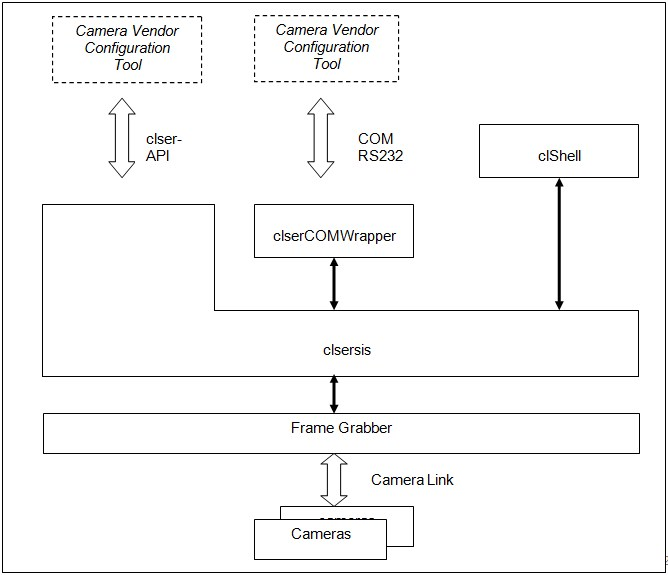

|
|
|
1 |
Introduction |
2 |
Camera Link Serial Interface API |
3 |
Using Virtual COM Ports |
4 |
clShell |
Camera Link Camera Configuration
1 Introduction
Camera configuration within Camera Link is based on a simple asynchronous serial reading and writing of configuration data. Within the Camera Link standard specification, a serial communication interface is defined. This standardized serial interface is available on the frame grabber. It enables the interaction of a vendor specific camera configuration tool and the frame grabber specific implementation of the serial communication functionality.In simple words: Any Camera Link compliant camera configuration software runs in combination with any Silicon Software Camera Link frame grabber.
Furthermore, even any COM-based camera configuration software can be used with Silicon Software framegrabbers, since the framegrabber runtime also offers the standard serial interface of the PC (COM) for communication with the camera by setting up virtual COM ports automatically.
Silicon Software also provides a terminal application "clShell" that allows to send and receive simple commands to and from a connected camera.
- •clsersis.dll
An implementation of the clser-API as defined in the Camera Link specifiaction
- COM adapter (ClSer COMWrapper)
A tool that allows communication by using the standard serial interface of the PC (COM) via virtual COM ports (instead of directly using the clser API)
- clShell
A terminal application that allows to send simple commands to a connected camera.


2 clsersis.dll: An implementation of the Camera Link Serial Interface API
The clsersis is the Silicon Software implementation of the Camera Link serial interface API. It is fully compliant to the Camera Link standard. It is available in all Silicon Software Runtime installation packages and will be installed at the directory structure as defined by Camera Link.
Basically this implementation is an DLL, that communicates with the framegrabber and passes camera commands through the framegrabber to the connected camera device in both directions. It covers all Silicon Software framegrabber types, which are designed to use Camera Link.
Camera vendor’s configuration tools, which support the clser interface, can be linked directly to this comonent, either by using the clallserial component or by direct function calls to the clsersis.
Remarks: •
- The installation directory is in general C:\CameraLink, but the installation is done as defined by Camera Link according to the corresponding registry key. •
- The default operation baudrate towards the camera is 9600 Bd. No parity. Baudrate range: [ 9600..921600].
- The functions have been implemented formerly in the clserme4.dll.
2.1 clser – API
The API is defined as described in the Camera Link standard specification and has functionalities for establishing a connection to a camera as well as writing and reading data. The API functions can be seen in the table below.
|
Name |
Description |
|
clSerialInit() |
Initializing serial interface. |
|
clSerialRead() |
Reading data from an open serial interface. |
|
clGetNumSerialPorts() |
Gives the number of serial ports. |
|
clGetNumBytesAvail() |
Gives the available number serial ports. |
|
clGetSerialPortIdentifier() |
Returns an ID for a serial port. |
|
clGetManufacturerInfo() |
Returns data concerning camera manufacturer in form of an integer. |
|
clGetSupportedBaudRates() |
Returns all supported Baud rates. |
|
clSetBaudRate()
|
Sets the Baud rate for a serial port.
|
|
clSetParity() |
Sets the parity bit which is needed by some cameras. |
|
clSerialWrite()
|
Writing on serial interface.
|
|
clGetErrorText() |
Returns the corresponding error text concerning a special error code. |
|
clFlushPort()
|
Cleaning the buffer from data that hasn't been sent over serial interface, yet.
|
|
clSerialClose() |
Releasing serial interface. |
Table 1: clser API overview

2.2 Adressing Cameras by Using the clsersis
Camera ports are identified by an numerical value, called serial index starting with a 0 for the first port of the framegrabber. By using the clGetSerialPortIdentifier() function, the names can be retrieved for each port.
2.3 Adressing Cameras in Multi-Grabber Systems
When having multiple frame grabbers in one system, the serial indices are incremented according to the ordering of the boards. See also the correspondig section in the SDK manual.
Example:
System configuration:
Board 1: 2 Camera link ports index 0..1
Board 2: 1 Camera link port index 2
Board 3: 2 Camera link ports index 4..5
Within this example: the number of resulting indices is 5. The indices are created as shown above. The indices can be seen at the port identifiers, see the clGetSerialPortIdentifier() function for further details.

3 Using Virtual COM Ports
Many software developers prefer to use a traditional COM interface to communicate with the camera. For this purpose, the Silicon Software runtime offers a module that functions as an adapter between the software and the standard Camera Link serial interface (Clser) of the frame grabber. This module provides virtual COM ports and is called ClSerCOM Wrapper.
For a quick information on how the virtual COM ports are set up automatically at system start, check the Quick Start Guide document.
For detailed information on the ClSerCOM Wrapper and how to use it, refer to the User Guide Using Virtual COM Ports.

Notes:
- Cameras with binary communication protocol are only supported by camera software of manufacturers.
- Some DALSA line and area scan cameras expects a carriage return. Therefore, please use the string "clshell -i -a". In case of doubt please check the camera user manual.
- Some JAI area scan cameras expects a carriage return and line feed. Please use the string "clshell -i -n". In case of doubt please check the camera user manual.
Usage of clshell:
clshell [-p port][-f file][-i][-a]
-p port : set port
-f file : read from file
-i : ignore line feed
-a : add carriage return
-n : add carriage return and line feed
Example:
clshell -p 0 : Camera communicates with frame grabber board 0 over Port A
clshell -p 1 : Camera communicates with frame grabber board 0 over Port B
clshell -p 2 : Camera communicates with frame grabber board 1 over Port A
clshell -p 3 : Camera communicates with frame grabber board 1 over Port B

| Forward |